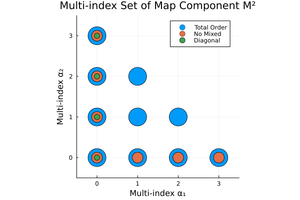
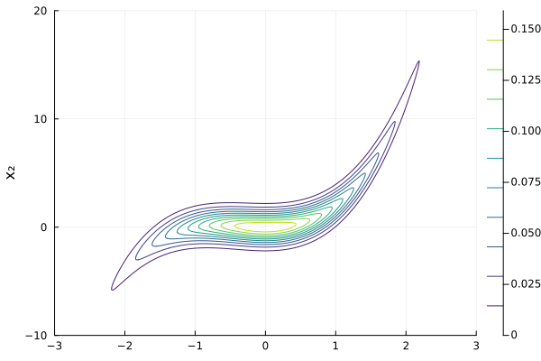
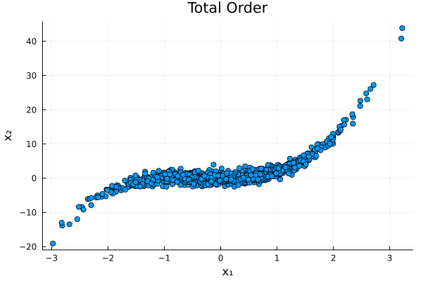
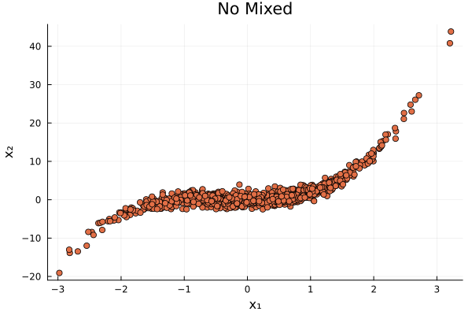
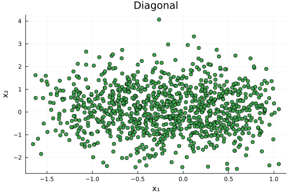

Choosing a Map Parameterization
A crucial aspect of constructing transport maps is the choice of map parameterization. In addition to the choice of the univariate basis functions, the construction of the multi-index set that defines the multi-dimensional polynomial expansion for each component can significantly influence the performance of the map.
The $k$-th component of a triangular transport map is defined as $T^k: \mathbb{R}^k \to \mathbb{R}$ [3]
\[T^k(z_1, z_2,\dots,z_k; \boldsymbol{a}) = f(z_1, z_2,\dots,z_{k-1},0;\boldsymbol{a}) + \int_{0}^{z_k} g(\partial_k f(z_1, z_2,\dots,z_{k-1},\xi;\boldsymbol{a})) \ \mathrm{d} \xi.\]
Here, $g$ is a monotone increasing function that ensures the monotonicity of the map, which is a necessary property for transport maps. A common choice for $g$ is the softplus function, defined as $g(x) = \log(1 + e^x)$.
Further, $f$ is a multivariate polynomial function parameterized by coefficients $\boldsymbol{a}$. The polynomial function $f$ can be expressed as a linear combination of multivariate basis functions:
\[f(z_1, z_2,\dots,z_k; \boldsymbol{a}) = \sum_{\alpha \in \mathcal{A}_k} a_{\alpha} \Psi_{\alpha}(z_1, z_2,\dots,z_k)\]
Here, $\Psi_{\alpha}(z_1, z_2,\dots,z_k) = \prod_{i=1}^{k} \psi_{\alpha_i}(z_i)$ are multivariate basis functions constructed from univariate basis functions $\psi_{\alpha_i}(z_i)$, and $\mathcal{A}_k$ is the multi-index set that determines which polynomial terms are included in the expansion.
By selecting an appropriate multi-index set $\mathcal{A}_k$, the structure of the map itself can be tailored to the problem at hand. This includes the ability to create sparse maps, which can be particularly beneficial in high-dimensional settings or when the underlying relationships are known to be simpler. This feature is similar to the concept of sparse polynomial chaos expansions used in (forward) uncertainty propagation [12].
In TransportMaps.jl, three types of map structures outlined in [1] are implemented:
- Total Order Map: Includes all terms up to a specified total degree $p$ for $d$ dimensions. In order to maintain the triangular structure, the $k$-th component of the map only depends on the first $k$ variables. Thus, the multivariate basis for the $k$-th component is constructed from the first $k$ univariate bases. The multi-index set $\alpha$ satisfies:
\[\mathcal{A}_k^{TO} = \{\boldsymbol{\alpha}: ||\boldsymbol{\alpha}||_1 \leq p \ \wedge \ \alpha_i = 0, \ \forall \ i > k\}\]
- No-Mixed Terms Map: Excludes mixed terms, retaining only pure terms for each variable. The multi-index set $\alpha$ satisfies:
\[\mathcal{A}_k^{NM} = \{\boldsymbol{\alpha}: ||\boldsymbol{\alpha}||_1 \leq p \ \wedge \ \alpha_i \alpha_j = 0, \ \forall \ i \neq j \ \wedge \ \alpha_i = 0, \ \forall \ i > k\}\]
- Diagonal Map: Includes only diagonal terms, where each variable is independent of the others. The multi-index set $\alpha$ for the $k$-th component satisfies:
\[\mathcal{A}_k^{D} = \{\boldsymbol{\alpha}: ||\boldsymbol{\alpha}||_1 \leq p \ \wedge \ \alpha_i = 0, \ \forall \ i \neq k\}\]
For an better overview, the multi-index sets for each map type will be visualized later.
Constructing Maps with Different Parameterizations
We will now demonstrate how to construct and compare the three types of map parameterizations using TransportMaps.jl. We start by importing the necessary packages:
using TransportMaps
using Plots
using DistributionsThen we define the three types of (sparse) maps. We consider a two-dimensional map with polynomial degree $p=3$, softplus as the rectifier function, and Hermite polynomials as the univariate basis functions.
Total Order Map
M_to = PolynomialMap(2, 3, :normal, Softplus(), HermiteBasis())
# alternative: PolynomialMap(2, 3, :normal, Softplus(), HermiteBasis(), :total)PolynomialMap:
Dimensions: 2
Total coefficients: 14
Reference density: Distributions.Normal{Float64}(μ=0.0, σ=1.0)
Maximum degree: 3
Basis: HermiteBasis
Rectifier: Softplus
Components:
Component 1: 4 basis functions
Component 2: 10 basis functions
Coefficients: min=0.0, max=0.0, mean=0.0
No-mixed-terms Map
We can use the NoMixedMap constructor for this map type:
M_nm = NoMixedMap(2, 3, :normal, Softplus(), HermiteBasis())
# alternative: PolynomialMap(2, 3, :normal, Softplus(), HermiteBasis(), :no_mixed)PolynomialMap:
Dimensions: 2
Total coefficients: 11
Reference density: Distributions.Normal{Float64}(μ=0.0, σ=1.0)
Maximum degree: 3
Basis: HermiteBasis
Rectifier: Softplus
Components:
Component 1: 4 basis functions
Component 2: 7 basis functions
Coefficients: min=0.0, max=0.0, mean=0.0
Diagonal Map
For the diagonal map, we can use the DiagonalMap constructor:
M_d = DiagonalMap(2, 3, :normal, Softplus(), HermiteBasis())
# alternative: PolynomialMap(2, 3, :normal, Softplus(), HermiteBasis(), :diagonal)PolynomialMap:
Dimensions: 2
Total coefficients: 8
Reference density: Distributions.Normal{Float64}(μ=0.0, σ=1.0)
Maximum degree: 3
Basis: HermiteBasis
Rectifier: Softplus
Components:
Component 1: 4 basis functions
Component 2: 4 basis functions
Coefficients: min=0.0, max=0.0, mean=0.0
Visualizing Multi-Index Sets
The multi-index set determines the terms included in the polynomial expansion. We extract the multi-index sets of the second component of each map for visualization:
Extract the multi-index sets of the second component of each map for visualization:
ind_to = getmultiindexsets(M_to.components[2])
ind_nm = getmultiindexsets(M_nm.components[2])
ind_d = getmultiindexsets(M_d.components[2])Finally, we plot the multi-index sets for each map type. This allows us to reproduce the comparison of multi-index sets as shown in Figure 1 in [1]:
scatter(ind_to[:, 1], ind_to[:, 2], ms=20, label="Total Order",)
scatter!(ind_nm[:, 1], ind_nm[:, 2], ms=12, label="No Mixed")
scatter!(ind_d[:, 1], ind_d[:, 2], ms=6, label="Diagonal")
scatter!(xlim=(-0.5, 3.5), ylim=(-0.5, 3.5), aspect_ratio=1, legend=:topright,
xlabel="Multi-index α₁", ylabel="Multi-index α₂",
title="Multi-index Set of Map Component M²")
Example: Comparing Map Parameterizations
We optimize the coefficients of each map to match a cubic target density. The target density is defined as:
\[p(x) = \phi(x_1) \cdot \phi(x_2 - x_1^3 - x_1^2)\]
where $\phi$ is the standard normal PDF.
Define the cubic target density and visualize it:
cubic_density(x) = logpdf(Normal(), x[1]) + logpdf(Normal(), x[2] - x[1]^3 - x[1]^2)
x₁ = range(-3, 3, length=1000)
x₂ = range(-10, 20, length=1000)
true_density = [exp(cubic_density([x1, x2])) for x2 in x₂, x1 in x₁]
contour(x₁, x₂, true_density;
label="x₁", ylabel="x₂", colormap=:viridis, levels=10)
We create the MapTargetDensity and quadrature weights for optimization:
target = MapTargetDensity(cubic_density)
quadrature = SparseSmolyakWeights(3, 2)Generate samples in the standard normal space $\boldsymbol{Z}$ for the variance diagnostic:
samples_z = randn(1000, 2)Now, we optimize each map type, compute the variance diagnostic and visualize the mapped samples.
Total Order Map
We start with the total order map:
optimize!(M_to, target, quadrature)
mapped_samples = evaluate(M_to, samples_z)
var_diag = variance_diagnostic(M_to, target, samples_z)
println("Variance Diagnostic: ", var_diag)
scatter(mapped_samples[:, 1], mapped_samples[:, 2],
ms=4, label=nothing, c=1, title="Total Order",
xlabel="x₁", ylabel="x₂")Variance Diagnostic: 1.0968396194559844e-16
No Mixed Terms Map
Next, we optimize the no-mixed-terms map:
optimize!(M_nm, target, quadrature)
mapped_samples_no_mixed = evaluate(M_nm, samples_z)
var_diag_no_mixed = variance_diagnostic(M_nm, target, samples_z)
println("Variance Diagnostic: ", var_diag_no_mixed)
scatter(mapped_samples_no_mixed[:, 1], mapped_samples_no_mixed[:, 2],
ms=4, label=nothing, c=2, title="No Mixed",
xlabel="x₁", ylabel="x₂")Variance Diagnostic: 1.0224934815077688e-16
Diagonal Map
Finally, we optimize the diagonal map:
optimize!(M_d, target, quadrature)
mapped_samples_diagonal = evaluate(M_d, samples_z)
var_diag_diagonal = variance_diagnostic(M_d, target, samples_z)
println("Variance Diagnostic: ", var_diag_diagonal)
scatter(mapped_samples_diagonal[:, 1], mapped_samples_diagonal[:, 2],
ms=4, label=nothing, c=3, title="Diagonal",
xlabel="x₁", ylabel="x₂")Variance Diagnostic: 0.09872800681227581
We observe that the total order and no-mixed-terms maps achieve similar variance diagnostics, while the diagonal map performs significantly worse due to its inability to capture dependencies between variables.
The choice of map parameterization can significantly impact the performance of transport maps. In practice, one might start with a simpler map structure, such as the diagonal or no-mixed-terms map, and then adaptively enrich the map based on the observed performance, as discussed in [3]. This adaptive approach allows for a balance between computational efficiency and approximation accuracy. For more information see the Adaptive Transport Maps manual and [3].
This page was generated using Literate.jl.